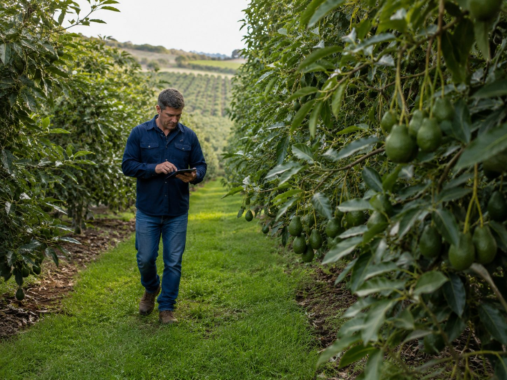
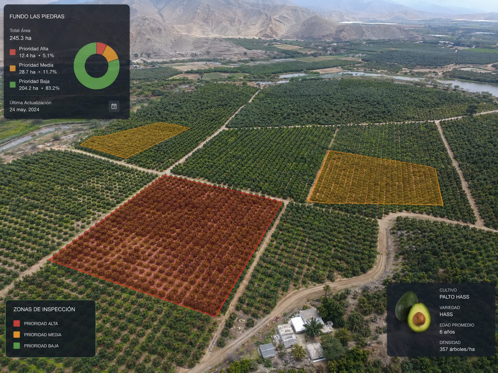
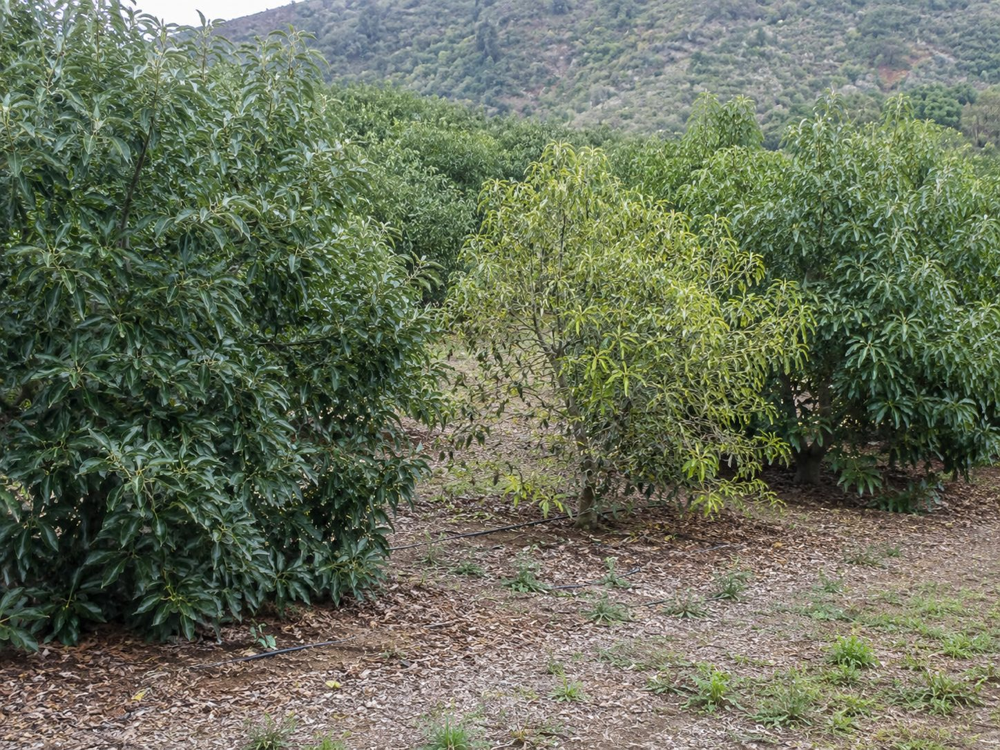
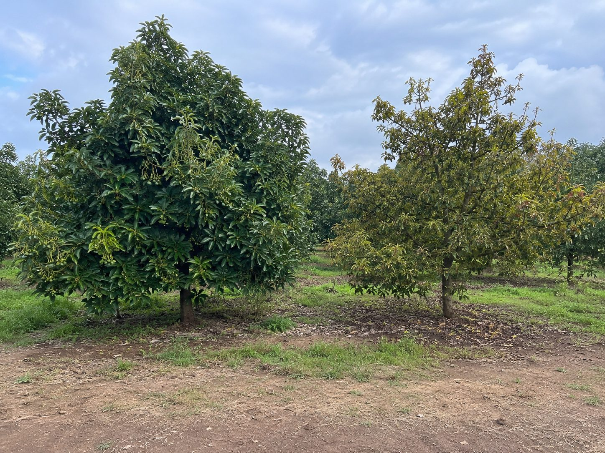

Agtech · Palta Hass · Demo piloto
Convierte vuelos de dron en un plan de inspección accionable para el fundo.
AgroLens ayuda a productores y jefes de campo a saber qué lote revisar primero, cuántos árboles validar y cómo cerrar el ciclo entre imagen aérea, inspección y decisión agronómica.
Fundo Santa Rosa
18.4 ha evaluadas
DJI Mini 4 Pro
RGB + IA visual

Plan de revisión
Lote 3 · Sector norte
Prioridad sugerida para validación en campo
1.6 haárea a revisar
126árboles
+0.6 havs último vuelo
Resultado del vuelo
Lo que el fundo necesita decidir hoy
El dashboard no intenta diagnosticar enfermedades. Prioriza zonas para validar en campo y facilita que el equipo actúe con evidencia.
Para el productor
Reduce inspección a ciegas y enfoca al equipo en las zonas que más conviene validar primero.
Para el jefe de campo
Entrega ruta, evidencia visual, checklist y tareas para cerrar seguimiento después del vuelo.
Para pilotos
Mide adopción, tiempo de respuesta, falsos positivos y correlación futura con rendimiento o packout.
Producto
Un reporte SaaS que conecta el vuelo con la acción.
El usuario ve primero la recomendación operativa; luego puede profundizar en mapa, alertas, tareas e historial.
Reporte de vuelo
Fundo Santa Rosa · Palta Hass
AgroLens identificó 1.6 ha para revisar primero.
La concentración principal está en el Lote 3, especialmente sector norte.

Vista aérea de demo
Zonas de validación por prioridad
Workflow
Diseñado para pilotos rápidos y aprendizaje continuo.
El MVP no necesita resolver todo el negocio agrícola desde el día uno. Debe probar que el equipo actúa mejor con información aérea priorizada.
1CapturaVuelo RGB sobre lotes definidos
2AnalizaDetección de anomalías visuales
3PriorizaRuta de inspección y árboles a validar
4ValidaFotos, notas y tareas de campo
5AprendeFalsos positivos e historial por lote
Evidencia visual
Imágenes que ayudan a vender y explicar el producto.
La demo combina vista aérea, inspección en campo y comparación visual de árboles para que el valor se entienda rápido.


Simulador
Impacto operativo estimado del foco de inspección.
Una demo para mostrar el valor del piloto: no promete ahorro exacto, pero ayuda a visualizar cómo AgroLens reduce recorrido inicial y mejora priorización.
Estimación referencial para conversación comercial. Los valores reales deben validarse durante el piloto.
Área no recorrida inicialmente16.8 ha
Horas de visita ahorradas4.9 h
Costo laboral referencialS/ 176
Mensaje comercialEl equipo empieza por 1.6 ha en vez de recorrer 18.4 ha completas.
Piloto
Qué debería probar AgroLens en un piloto.
Para inversionistas y clientes, el piloto debe demostrar uso real, mejora operativa y una ruta clara hacia KPIs de negocio agrícola.
Output entregable
- Reporte web por vuelo
- Mapa con zonas priorizadas
- Listado de árboles o zonas a validar
- Checklist y tareas de campo
Métricas del piloto
- Tiempo de respuesta a alertas
- % alertas revisadas
- Falsos positivos reportados
- Horas de inspección evitadas
KPIs a integrar luego
- Rendimiento por ha
- Packout exportable
- Calibre y descarte
- Productividad del agua
Siguiente paso
Volver al resultado
Un piloto no debe vender “IA mágica”. Debe probar mejores decisiones en campo.
AgroLens se posiciona como una capa de inteligencia operativa entre el vuelo, el agrónomo y la gestión del fundo.